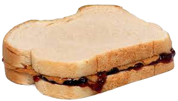
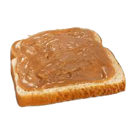
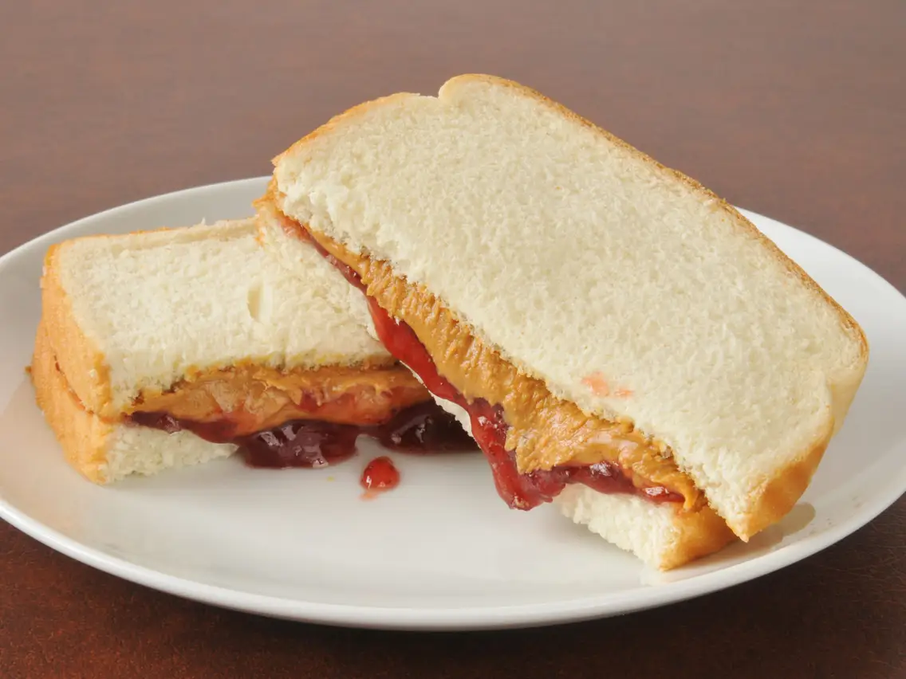

Peanut Butter and Jelly Sandwich

I have ate peanut butter and jelly sandwiches my whole life. I like homemade the best, but the store bought ones are good too. I used to take one everyday to school for lunch. It is also a great snack for when you are playing outside or other activities.
First put two peices of bread side by side.
 Then put jelly on one peice of bread.
Then put jelly on one peice of bread.

Next put peanut butter on the other peice of bread.
Then put the two peices of bread together.

Then cut in half and enjoy!
The only allergy you should have to worry about is a peanut allergy.